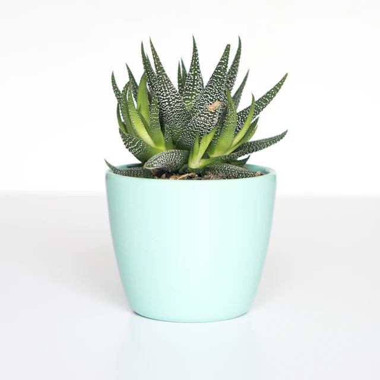
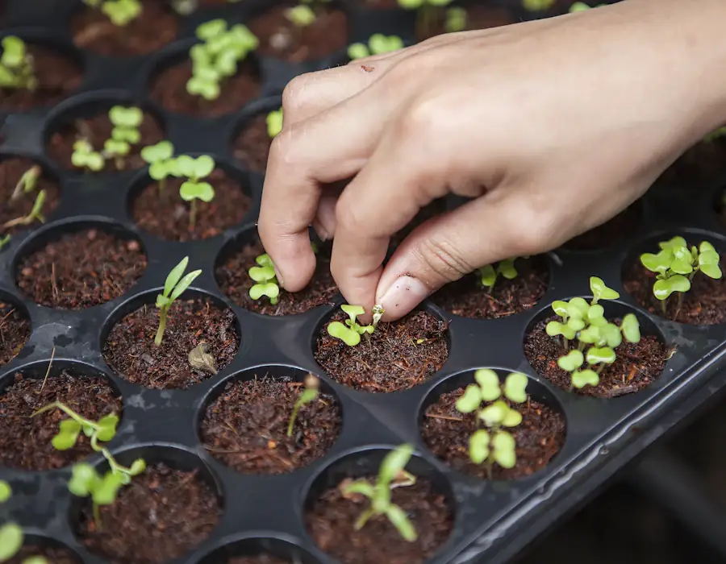

BeginnerZebra Haworthia
Haworthiopsis attenuataForgives three missed waterings and a north-facing windowsill. Our most returned-to plant.
£14 · 9cm glazed pot
Ready this week
Small batches, potted on when they ask for it rather than on a schedule. When a tray sells out it stays sold out until the next one is ready.

From the potting bench
Nobody kills a plant on purpose. Almost everything that comes back to us on the counter comes back for one of these three reasons.
Come and see
The gate at the end of Lower Marsh Lane is the one with the wheelbarrow against it. Park on the verge; the gravel is for deliveries.
Tue – Sat, 9am – 5pm
Sun, 10am – 4pm
Closed Mondays, and the week after Christmas.
Lower Marsh Lane
Bury St Edmunds IP33
Twelve minutes from the A14, junction 44.
The violet button, bottom right
Morgana knows what came off the bench this morning and what is still under glass.
The advice desk
Tell us which way the window faces, how warm the room gets and how honest you're prepared to be about watering, and we'll put three names in front of you. It takes a minute and it saves a plant.
Somebody is on the bench all day. Out of hours, the button in the corner still answers — it knows the stock list and the state of the frames.